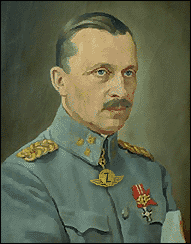

Forums galactiques > Assemblée Galactique : diplomatie officielle > E-L-E-C-T-I-O-N-S
OUI | 38 | |
NON | 41 | |
Total : 79 vote(s) | ||
| AlphonseHubert Respect diplomatique : 690  18/02 ETU 23:27  | Score : 0 Détails Shoubi, comme d'habitude, occulte le point de vue adverse.
A l'AST, nous ne pensons pas que le chaos pur soit générateur de liberté, au contraire, c'est un facteur d'aliénation, car la liberté pure est la liberté de la jungle, la liberté qu'a le petit de se faire bouffer par le premier grand venu. La mort de Gabriel Fore l'a prouvé de manière exemplaire : la liberté sans égalité est impossible. L'objectif de l'AST n'est pas de parvenir à l'ordre absolu, c'est un mythe inventé par Gabriel Fore. Nous ne souhaitons pas abolir l'initiative privée, les libertés publiques de chaque commandant, nous voulons seulement que ces libertés soient garanties par un cadre de protection commun, celui de l'égalité. Parce que tout ce qui est protégé est plus libre... | ||
| yable Respect diplomatique : 250  19/02 ETU 12:08 | Score : 5 Détails Vous parlez d'une liberté très limitée mon cher Alphonse, et comme je vous l'avais déjà expliqué, une liberté qui tend vers la décadence...
Un peuple qui se rend compte qu'il n'a rien d'autre à faire que de tendre la main pour se faire entretenir perd indubitablement de son esprit d'initiative, de son esprit concurentiel, car à quoi bon être meilleur que son voisin si celui ci doit partager son excédent avec vous ? De plus, de tout lieux et de tout temps, il y a toujours eu des leaders et des suiveurs, et ce n'est pas parce que chaque peuple possède les mêmes ressources que l'égalité est présente. Imaginez un seul instant que vous parveniez à vos fins : que chaque commandant soit l'égal de son voisin en terme de ressources, de flottes, etc... Imaginez maintenant un homme cultivé, éduquer pour commander, manipuler et ayant l'âme d'un chef. Cet homme possèdera alors une puissance gigantesque, pouvant à lui seul déclencher des guerres sans précédant et s'emparer du pouvoir sous le couvert de belles paroles. Une telle société, bien que n'étant pas encore à ce stade existe, et il s'agit de l'AST. L'égalité n'est pas encore d'actualité en son sein, mais déjà de nombreux commandants possèdent une puissance conséquente. Ils sont d'autant plus faciles à ralier sous une seule bannière, étant donné qu'ils savent très bien qui est leur mécène. Peut être n'est pas la la volonté des "dirigeants" de l'AST, mais que vous le vouliez ou non, c'est ainsi que cela se passe. Voila la principale raison de ma méfiance pour cette organisation, ce parti politique. Maintenant, et bien que j'ai moi même profité de la discution actuelle pour discourir ici même, le sujet débattu ici même est celui des élections, et je pense que si un véritable débat devait avoir lieux, il serait bon de changer de salle. | ||
| AlphonseHubert Respect diplomatique : 690 19/02 ETU 13:30 | Score : 3 Détails yable, j'entends vos critiques, et je vous remercie de les formuler de manière toujours aussi précise et constructive.
Je pense que vous confondez encore et toujours "égalité" et "nivellement absolu". L'objectif de l'AST, à mon sens, n'est pas de réduire chacun à exactement la même flotte et exactement le même nombre de planètes. L'objectif de l'AST, c'est de réduire les inégalités économiques afin que chaque commandant puisse être sûr d'être battu s'il est attaqué par n'importe lesquels dix autres. Pourquoi ? Parce que dans une telle Galaxie, c'est la diplomatie qui fera la différence. En effet, aucun commandant ne pourra se permettre d'insulter gratuitement, de mépriser officiellement, car il s'exposera alors à des conséquences difficiles pour lui. Dans la Galaxie telle qu'elle est, certains commandants sont assurés de leur impunité totale, car ils ne peuvent pas être battus militairement à moins d'une alliance de tous les autres puissants contre eux (et encore !). Quant à ce que vous dites sur l'AST, que certains utiliseraient uniquement pour recevoir de l'argent, c'est sans aucun doute vrai. Cependant, l'expérience nous montre que ce n'est pas le cas de la majorité, et que de nombreux commandants entrés par avidité restent parce qu'ils ont vu que l'AST fonctionnait de manière démocratique et proposait à chacun sa place, avec responsabilités, libertés, aide etc. Ainsi, la plupart de ceux qui ont été aidés décident par la suite de "rendre" cette aide en aidant eux-mêmes les jeunes qui les suivent. Même s'il y a et y aura toujours des brebis galeuses, l'expérience prouve que le bilan de l'AST, de ce point de vue, est globalement très positif. | ||
| Mannerheim Respect diplomatique : -10  19/02 ETU 14:33 | Score : 0 Détails "globalement positif"....
L'Histoire a tranché | ||
| Shoubenigourath Respect diplomatique : 119 19/02 ETU 15:01 | Score : -4 Détails L'Histoire tranche toujours.
| ||
| jseb Respect diplomatique : 74  19/02 ETU 15:05 | Score : 1 Détails '''Les hommes font l'histoire ce sont donc les hommes qui tranchent. Alors essayons de trancher la plus belle et la meilleure part pour tous, pour une paix véritable sans toutes ces choses qui font parler mes fleurs, par exemple...'''
| ||
| lokzabu Respect diplomatique : 25 19/02 ETU 16:26 | Score : 2 Détails Une paix entre tous les joueurs est une idée lubie car il y aura toujours un jalou,un assoifé de pouvoir..etc
Les guerres font parties de la galaxie le seul moyen de s'en protégé et de compter sur soit et ses alliés. | ||
| Ghozer Respect diplomatique : 261 19/02 ETU 16:48 | Score : 3 Détails Mais je ne vois de mal a éssayer de les éviter...
| ||
| freestyler Respect diplomatique : 8 19/02 ETU 18:07 | Score : 3 Détails La vie est un cadeau, mais pour un commandant la survit est combat, pour survivre il doit grandir et devenir fort, soit par ses propre moyen soit avec l'aide de ses alliés.
Mais que peut faire un jeune commandant qui n'a ni force, ni défence, ni allié face à une guerre qui ravage la galaxie. Il a beau essayer de s'en sortir mais à chaque fois il sera pris au milieu d'une pluie de bombardement qu'il ne pourra éviter, tout ce qu'il avait, ou pratiquement tout, sera détruit et il ne progressera pas. Il n'a pas voulu cette guerre, il n'en connaît même pas les causes et le but n'en reste que plus flou, mais certain n'hésite pas à les entrainer dans ce tourbillon qui les mène tout droit à leur perte. Certains dirons:"dans toute guerre il y a des victimes", mais la plupart des victime sont ceux qui n'y sont pour rien et qui n'ont rien fait de mal. Ils sont écrasés parce qu'ils ont décidé de grandir seuls donc ont peu de défence et certain profite de cette oportunité pour agrandir leurs territoires. Je vous raconte ceci car je suis moi même un jeune commandant indépendant qui a déjà été pris plusieurs fois dans cette guerre. Une fois chassé d'un système, une autre fois a subi des bombardements, résultat plus de flotte, et après une période de 2 ou 3 semaine calme a été totalement éradiqué sans en connaître la raison. Et je suis sûr que je ne suis pas le seul dans cette situation. Ayez au moin la gratitude d'éparnier les commandant neutre. Cordialement freestyler. PS: Faite l'amour mais pas la guerre. PS2: Peace and love mais pas en même temps. | ||
| Imothep Respect diplomatique : 571  20/02 ETU 13:49 | Score : -1 Détails On attend toujours les élections.
|
Forums galactiques > Assemblée Galactique : diplomatie officielle > E-L-E-C-T-I-O-N-S